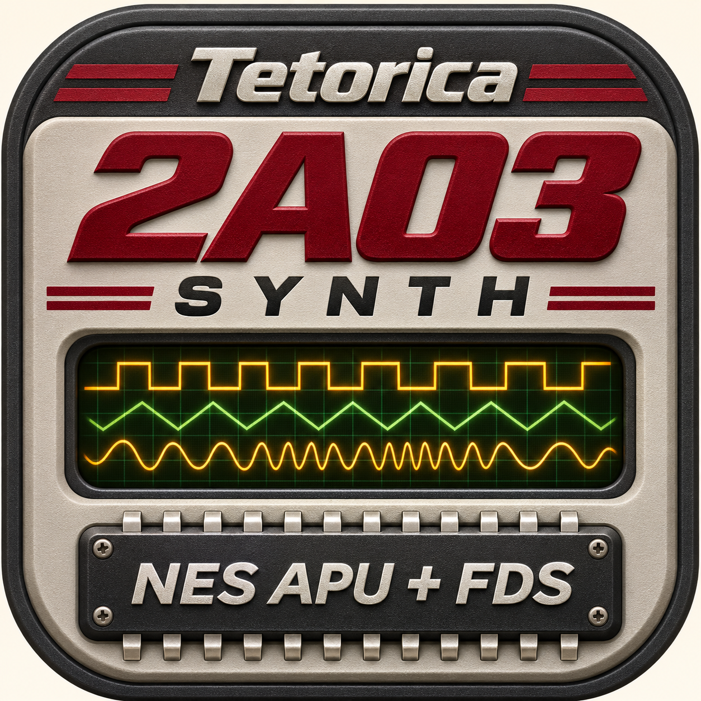

NES APU + FDS
Tetorica 2A03 Synth
Explore the sound. Draw a wave. Take the code.
?
Auto plays the edited source, using both Pulse channels in round robin. A numbered CH displays, edits and plays that physical channel. Auto update follows Code or the selected song channel. Pause freezes the song for audition. Capture copies the displayed channel into your Auto instrument and keeps the song position.
Waveform / Spectrum
Live output after Master volume.
Sounds from VGM
Choose an NES / FDS VGM, then select a sound to play.
File notes
?
Original VGM / VGZ files are stored in vgm and extracted instruments in presets. Select a sound to edit it, or Play song to observe register changes. Incomplete sample RAM and direct DAC PCM cannot be recovered as DPCM. Sound notes describe approximations.
Sound source
Pulse · 2 voices · round robin
Hardware now
Live chip values
Instrument files
Performance
Software performance · the same NES + FDS APU as the controls above. Run with Ctrl/Cmd+Enter. Apply with Ctrl/Cmd+Shift+Enter.
Code is saved in Files. Loading a project never runs it automatically.
Console
?
Use const nes = await useSoundChip("nes") and its methods. CH1 / CH2 are Pulse, CH3 Triangle, CH4 Noise, CH5 DMC and CH6 FDS. Run starts fresh. Apply keeps context and named loops. Keyboard and controls can edit the same APU during Code performance. Starting a song stops Code. Stop releases Code notes and retains your sound.